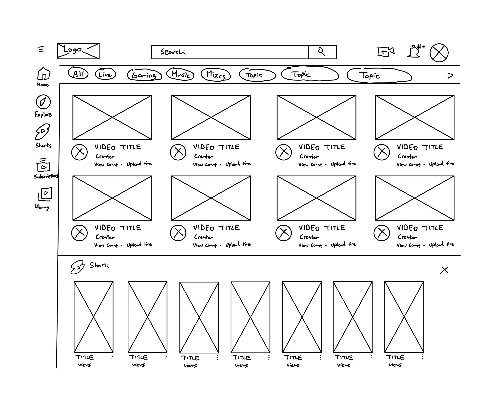
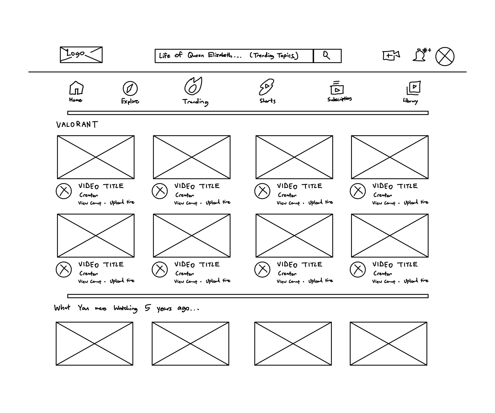

-
Using the favorite website you chose in homework 1, create a wireframe for one page of it using pen/paper, PowerPoint, or any your tool of choice. (use the 'img' tag!) Make sure to let us know what the name of your website is (Use the 'p' tag!)
 -
Try to improve the website you've chosen, and create a redesigned wireframe of one page for the same website using the principles of visual hierarchy that you learned from the article.

-
What is the goal of the website? Who is it intended for? How does the design accomplish this? Write 2-3 sentences answering these questions. (Use the 'p' tag again!)
The goal of Youtube is to provide entertainment for a variety of audiences. The videos that a user might be most interested in are usually displayed at the top of the webpage. Viewcounts and upload dates are included at the bottom of each video thumbnail to provide users with some understanding of how popular and recent a video might be, which could influence their decision to watch that video.
-
Write 2-3 sentences about what problems your redesign addressed, and how it solved them.
One problem that I've faced when using the Youtube website is that similar videos are not grouped together on my home page. Instead, Youtube provides an amalgmation of videos from your combined watching patterns. Sometimes, I'm just in a mood to watch only Valorant. Having that top interest displayed prominently at the top of my Youtube feed means my attention is captivated right away. Another issue I wanted to address is accessibility to the Trending page. The Trending page is kept away through several button clicks. I brought the Trending button to the front of the home page, so that users who really want to be "in the know" about what's popular can get to Trending right away.
NOTE: Make sure to include the wireframe images in the website and don't just put it in your assets folder!
Your wireframes should look something like this: